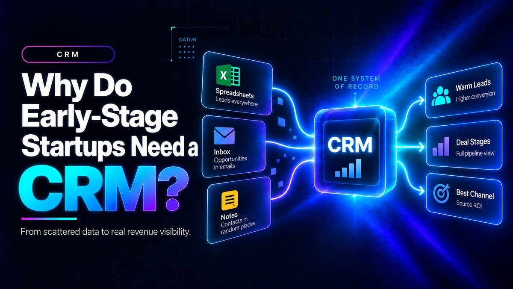

Why Do You Need a CRM in the Early Stages of a Startup?

Direct answer: Early-stage startups need a CRM because without one, founders cannot see which leads are warm, why deals stall, or which marketing channels produce paying customers. A CRM replaces scattered spreadsheets, emails, and memory with a single system of record, letting founders measure real revenue activities instead of guessing, and catch problems months before they show up in the bank balance.
- A spreadsheet-and-memory approach works with five prospects but breaks down almost immediately after, since the real problem is the lack of a reliable revenue operating system.
- Nine of the top 20 reasons for startup failure, and five of the top 10, are customer-related, not product-related, according to CB Insights.
- Founders using a CRM should track just two or three numbers, like pipeline velocity and lead source conversion rate, rather than trying to measure everything.
- CEOs who personally own their CRM implementation see an 84% success rate, versus 28% when it's delegated, based on an analysis of 50+ startup CRM rollouts.
- 97% of businesses using a CRM met or exceeded their sales goals, and CRM adoption is linked to an estimated $8.71 return for every $1 spent.
Questions this article answers
- What is the spreadsheet-and-memory trap?
- Why is this a revenue problem, not just an operations problem?
- What does measuring revenue activities actually mean?
- How is a CRM a startup's first revenue hire?
- How does CRM maturity and founder ownership affect success?
- How does a CRM solve the go-to-market complexity problem?
- What is the revenue impact of using a CRM?
- What is the suggested first step for founders adopting a CRM?
- Plus 6 FAQs answered below
What is the spreadsheet-and-memory trap?
Most founders start managing customers with spreadsheets, inboxes, and memory, and this works fine with a handful of prospects but quickly collapses as enquiries increase.
Founders often manage customer information through spreadsheets, emails, notebooks, messaging apps, and personal memory, an approach that may work with five prospects but becomes unreliable as enquiries increase. The failure mode repeats across nearly every startup: a warm lead gets buried under investor emails, two teammates message the same prospect with conflicting context, and a booked demo is forgotten because the note only lived in someone's head.
At that point, the issue isn't messiness, it's structural. As one CRM implementation guide puts it, the problem isn't organization, it's that the company has no reliable revenue operating system.
Why is this a revenue problem, not just an operations problem?
Customer-related breakdowns, not product failures, dominate the actual reasons startups die, which means poor revenue visibility is a direct threat to survival.
CB Insights has studied hundreds of startup post-mortems and found that nine of the top 20 reasons for startup failure, and five of the top 10, were related to customers: not meeting their needs, not listening to them, or ignoring them entirely.
More recent CB Insights data on VC-backed shutdowns since 2023 shows that while running out of capital tops the list at 70%, it is almost always the final symptom, not the root cause. The deeper causes include poor product-market fit (43%), bad timing (29%), and unsustainable unit economics (19%). Running out of cash is the disease's last stage, not its origin, and a CRM is the tool that surfaces the leading indicators of that disease months before it hits the bank balance.
What does measuring revenue activities actually mean?
It means turning revenue from a single end-of-month number into trackable data points like lead volume, deal stage duration, channel source, and touchpoint history.
Without a CRM, revenue is just a number that appears at month's end. With one, it becomes a measurable set of activities. One CRM implementation guide frames the right early-stage question precisely: not "what can my CRM measure?" but "what three numbers tell me whether my pipeline is healthy?"
Pipeline velocity, how fast deals move from one stage to the next, is one of the most important of these because it predicts revenue without waiting for a closed-won event. Velocity data is diagnostic: if deals stall at the proposal stage, there's a presentation or follow-up problem; if they stall at contract, there's a legal or pricing friction point. The second key metric is lead source conversion rate, which tells founders which acquisition channels produce buyers rather than browsers and where to invest more budget. Without a CRM, founders answer these questions with intuition instead of data, a blind spot that can turn into a cash crisis eighteen months later.
How is a CRM a startup's first revenue hire?
A properly used CRM captures demand, tracks sales motion, and remembers every follow-up without getting tired, functioning as an always-on employee before a founder even makes their first sales hire.
Founders often think about hiring a salesperson before building a system, but according to one CRM analysis for early-stage teams, that sequencing is backwards: before adding another SDR, account executive, or growth marketer, a startup needs the system that captures demand and tracks motion.
A good CRM acts like a first always-on revenue hire, keeping lead records clean, creating accountability around pipeline stages, and giving everyone the same version of reality. For resource-constrained founders, this means the CRM isn't overhead, it's a substitute for hiring someone whose full-time job would otherwise be chasing follow-ups and pipeline hygiene.
How does CRM maturity and founder ownership affect success?
How a CRM is adopted matters as much as whether it exists, and founder-owned implementations succeed at far higher rates than delegated ones.
An analysis of 50+ CRM implementations across early-stage startups found that companies where the CEO personally owned the revenue architecture had an 84% success rate, while those where implementation was delegated had only a 28% success rate.
The recommended approach isn't to buy a complex system and hope it fits, but for the founder to map their actual deal flow, not their ideal process, identify the two or three metrics that predict pipeline velocity in their specific business, and implement only what directly impacts those metrics. This lean, founder-led approach avoids the multi-month, over-engineered rollout that kills early momentum.
How does a CRM solve the go-to-market complexity problem?
A CRM prevents the "Franken-stack" problem where startups cobble together dozens of disconnected sales and marketing tools, by acting as the single hub every other tool plugs into.
US startups are contending with an increasingly fragmented go-to-market technology landscape. Many fall into the "Franken-stack" trap, cobbling together separate tools for data, email, and video, which creates data latency, high subscription costs, and workflow friction.
With over 15,000 martech tools on the market and growing, per Chief Martec's 2025 report, a fragmented stack creates silos, and tools that don't integrate increase spend while reducing impact. Organizations that invest in centralized stack management gain a measurable edge in agility and performance, and a well-implemented CRM is what prevents fragmentation from spiraling by becoming the single hub every other GTM tool plugs into.
What is the revenue impact of using a CRM?
CRM adoption correlates with meaningfully better sales outcomes, including higher goal attainment and a strong measurable return on investment.
The inability to measure revenue activities isn't a minor inconvenience for an early-stage founder, it's a direct threat to survival, since most startup deaths trace back to unresolved customer and revenue visibility problems long before cash runs out.
Multiple industry analyses report that 97% of businesses that use a CRM system met or exceeded their sales goals in the past year, and businesses using a CRM are 86% more likely to exceed their sales goals than those that don't. The average return on CRM investment is estimated at $8.71 for every $1 spent on sales CRM software. For a founder with limited runway, that's the difference between a system that flags a problem before it becomes a shutdown, and one that tells you nothing until it's too late.
What is the suggested first step for founders adopting a CRM?
Spend an afternoon mapping real deal flow, pick two or three metrics that predict revenue, and set up a lightweight, founder-owned CRM configured only around those metrics.
The most practical next step for an early-stage founder isn't buying the most powerful CRM on the market. It's spending one afternoon mapping the real, current deal flow on a whiteboard, identifying the two or three metrics, such as pipeline velocity and lead source conversion rate, that most directly predict revenue.
From there, set up a lightweight CRM, such as a free-tier HubSpot or similarly accessible tool, configured only to track those specific metrics from day one. The founder should personally own the setup and daily use rather than delegating it, since founder ownership has been directly correlated with dramatically higher implementation success rates.
Frequently asked questions
Why do early-stage startups struggle without a CRM?
Without a CRM, founders manage customer relationships through spreadsheets, emails, and memory, which works with a handful of prospects but quickly becomes unreliable as leads increase, causing follow-ups and warm leads to fall through the cracks.
Is running out of cash really the reason most startups fail?
Running out of capital is usually the final symptom, not the root cause. CB Insights data shows deeper causes like poor product-market fit, bad timing, and unsustainable unit economics, many rooted in unresolved customer and revenue visibility problems.
What two metrics should an early-stage founder track first in a CRM?
Pipeline velocity, how fast deals move between stages, and lead source conversion rate, which channels produce paying customers, are the two most direct predictors of revenue health for early-stage founders.
Should a founder hire a salesperson or set up a CRM first?
Setting up a CRM first is recommended, since it functions as an always-on revenue hire that captures demand and tracks follow-ups before the company adds a dedicated SDR or account executive.
Does it matter who implements the CRM at a startup?
Yes. An analysis of 50+ startup CRM implementations found an 84% success rate when the CEO personally owned the rollout, compared to only 28% when implementation was delegated.
What return can a startup expect from investing in a CRM?
Industry data cited in CRM statistics reports an average return of $8.71 for every $1 spent on sales CRM software, with 97% of CRM-using businesses meeting or exceeding their sales goals.
Sources
- Stamina: CRM Software for Startups
- MAccelerator: CRM Setup for Early-Stage Startups
- Arunangshu Das: CRM for Startups
- MriaCRM: CRM for Startups, What to Set Up Before Scaling Revenue
- CB Insights: Top Reasons Startups Fail
- Forbes: Why Start-Ups Fail
- CRM.org: CRM Statistics
- Zylo: GTM Tech Stack
- Sendr: How to Choose a GTM Pricing Model
Want a lightweight, founder-owned CRM set up and tracking real revenue metrics from day one?
Contact →